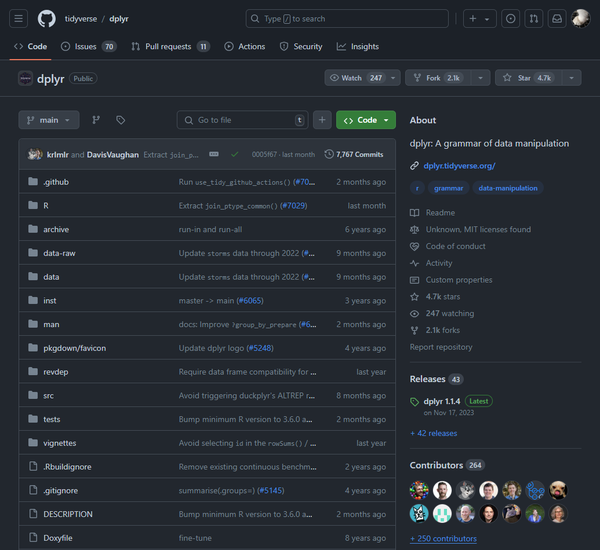
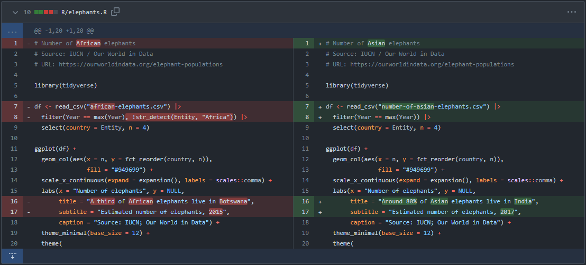
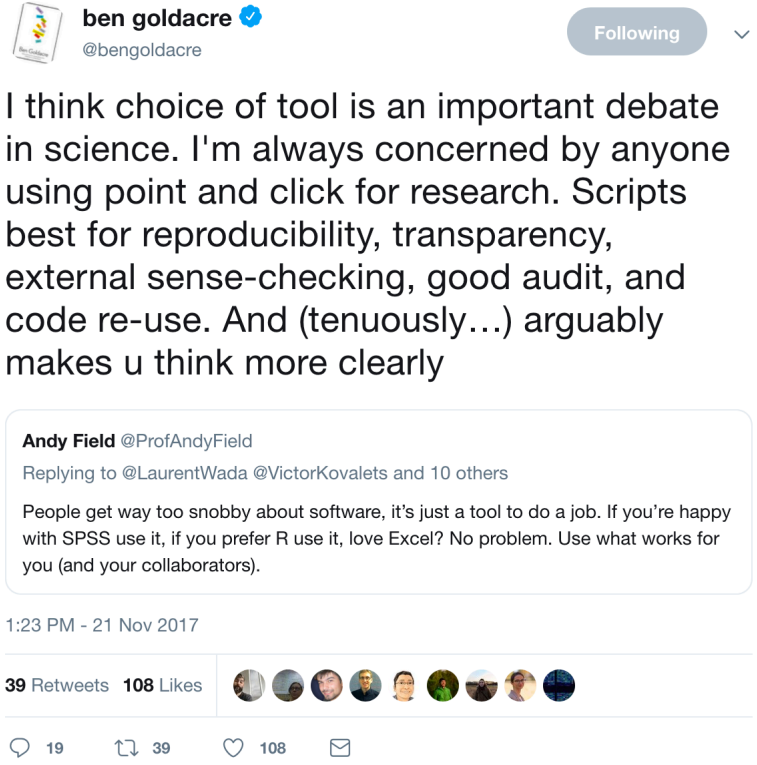
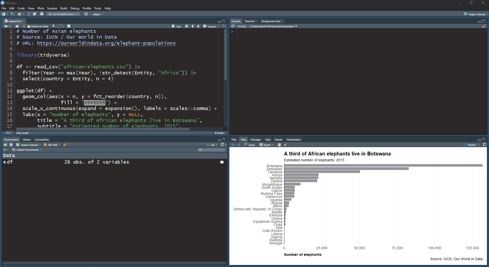
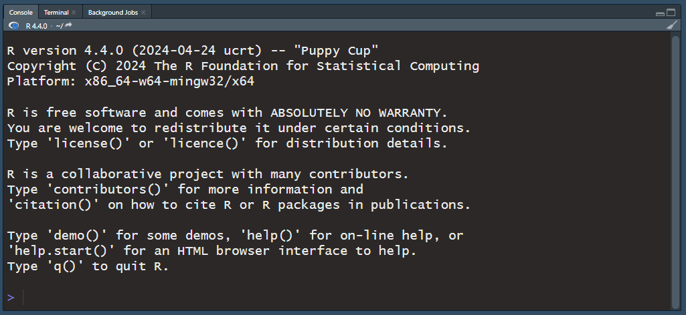
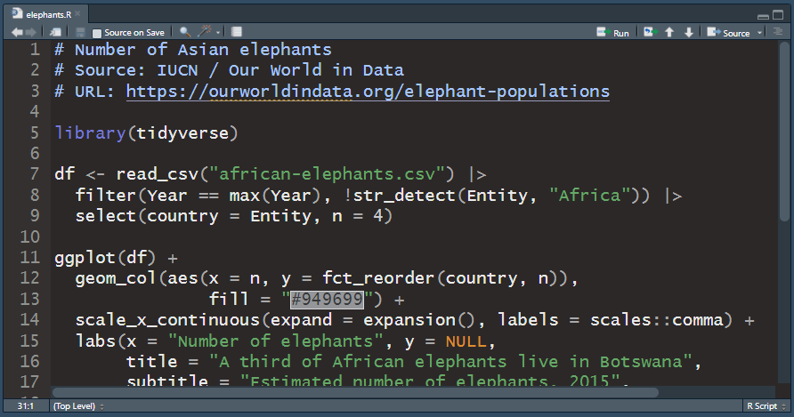
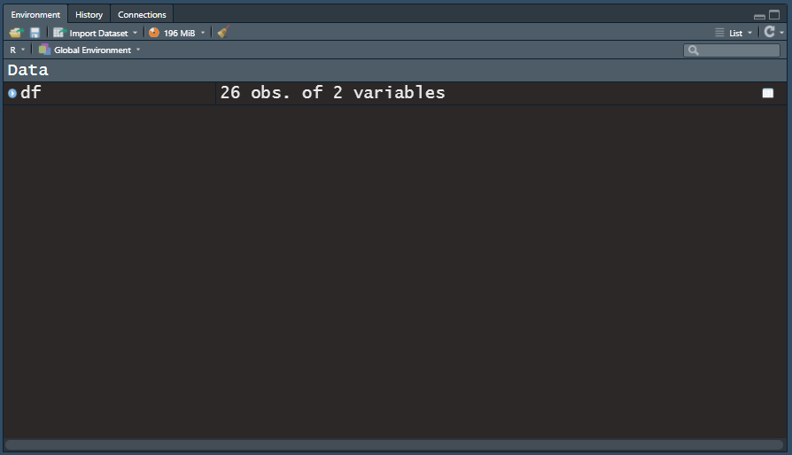
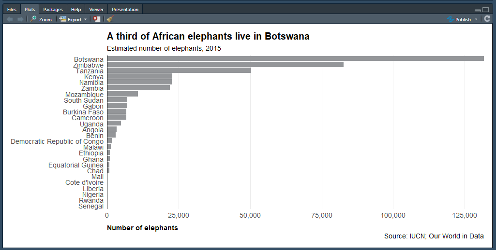
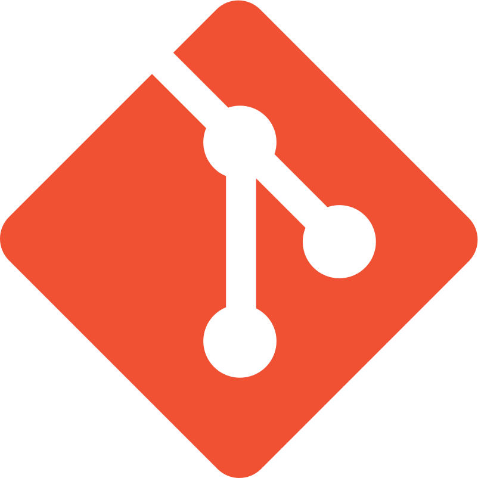

An introduction to R, RStudio, git, and GitHub
R
What is R?
R is an open source programming language for statistical analysis and data visualisation. It was developed by Ross Ihaka and Robert Gentleman of the University of Auckland and released in 1995. There are currently 21,119 peer-reviewed and tested packages available for R. These packages provide functions for frequentist and Bayesian statistics, meta-analysis, machine and deep learning, Big Data processing, interactive graphics etc.
Why use R?
Open-source

- R is free to use
- No vendor lock-in
- Codebase is open to view
- Users develop and maintain packages
Human readable
# Number of African elephants
# Source: IUCN / Our World in Data
# URL: https://ourworldindata.org/elephant-populations
# load tidyverse package
library(tidyverse)
# read CSV file
df <- read_csv("african-elephants.csv") |>
# filter by latest year and exclude rows containing 'Africa'
filter(Year == max(Year), !str_detect(Entity, "Africa")) |>
# select and rename columns
select(country = Entity, n = 4)Diffable
Changes in code can be tracked with version control

Reproducible

- Shows homework
- Enables peer review
- Gives confidence in results
Community driven

RStudio
Software
RStudio is an integrated development environment (IDE) for R. It’s intuitive interface makes working with R much easier. It supports syntax highlighting, tab completion and is integrated with Quarto.
RStudio is freely available under the GNU Affero General Public License v3. A commercial desktop license is also available.
RStudio’s panes

Console

The Console is used to execute R commands immediately.
Source

The Source pane appears when you open a new file e.g. File -> New File -> R Script. Code can be saved in dedicated .R scripts and executed in the console with Ctrl-Enter/Cmd-Enter. Syntax highlighting and tab completion are also available.
Environment

The Environment pane shows the datasets, models, and plots that are loaded in the current R session. This pane also contains tabs with a scrollable history of executed code, connections to databases and git options.
Files

The Files pane shows plots and interactive web content, help documentation and R packages that you can install and load.
Customisation
The appearance of RStudio can be changed to suit you:
- Increase the font size: Tools > Global Options > Appearance > Editor Font size
- Move the Console pane to the right: View > Panes > Console on Right
- Add a margin column line: Tools > Global Options > Code > Display > Show margin
- Automatic text wrapping: Tools > Global Options > Code > Editing > Soft-wrap R source files
You can also change RStudio’s overall theme. Opting for a dark theme reduces the amount of glare that your eyes are subject to. Change the global theme to Dark by selecting ‘Appearance’ in the Global Options menu and opt for an Editor theme with a dark palette such as ‘Material’.
Keyboard shortcuts
RStudio has many useful shortcuts that enable you to keep your hands on the keyboard thereby boosting your coding productivity. For example,
Ctrl/Cmd + Enter: Run your selected code in the ConsoleCtrl/Cmd + Shift + M: Add piping operator|>Ctrl/Cmd + L: Clear the console windowCtrl/Cmd + Shift + R: Add a section breakShift + Ctrl/Cmd + 1: Make the console full screenCtrl/Cmd + Shift + A: Format your code
NB The use of Ctrl or Cmd depends on whether you are using a Windows or a Mac device.
For a complete list of all available shortcuts just type: Alt + Shift + K
git and GitHub
git

git is a piece of version control software written by Linus Torvalds, the creator of Linux.
GIT — the stupid content tracker
“git” can mean anything, depending on your mood.
- random three-letter combination that is pronounceable, and not actually used by any common UNIX command. The fact that it is a mispronunciation of “get” may or may not be relevant.
- stupid. contemptible and despicable. simple. Take your pick from the dictionary of slang.
- “global information tracker”: you’re in a good mood, and it actually works for you. Angels sing, and a light suddenly fills the room.
- [REDACTED]
from Torvalds’ initial commit on 7 April 2005.
git glossary
- repo project folder
- remote a repo available to all team members
- clone get repo from remote
- stage prepare files for commit
- commit take a snapshot of a file or files
- hash commit id
- pull get commits from a repo
- push send commits to a repo
- branch sandbox in a repo
- main default branch where live code sits
- merge combine all commits on branches
- merge conflict contradictory file changes
- pull request propose changes to remote repo
GitHub

GitHub is a website and service that hosts Git repositories, where developers can store, share, and collaborate on their projects.
- Changes to local files are tracked and timestamped with git and hosted remotely on GitHub in repositories (or repos).
- GitHub facilitates collaborative development because changes can be made to files by different people and merged together.
- GitHub also provides issue tracking, wikis, website hosting amongst other services.